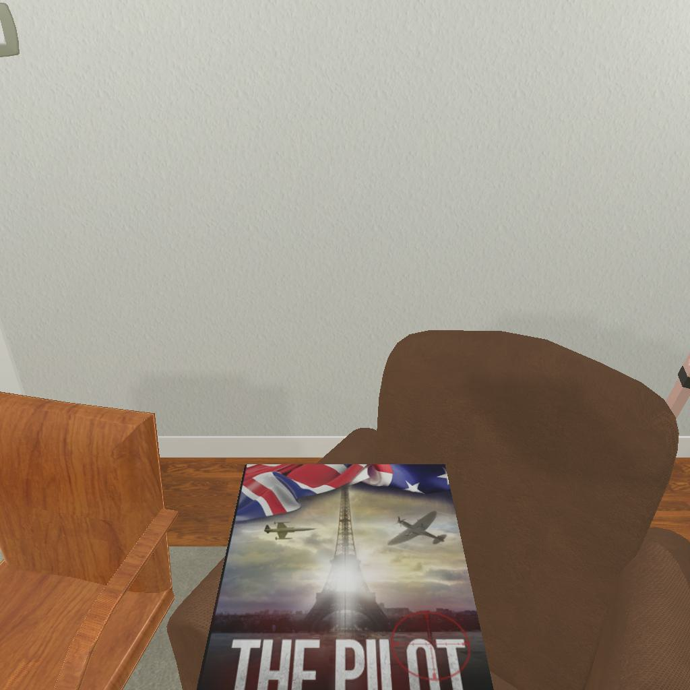

---------------------------------------------------------task: 5---------------------------------------------------------
--------------------------------------------------------------------------------------------------------------------------------------------------------------------
--------------------------------------------------------------------------------------------------------------------------------------------------------------------
Step:--------------------------------------------------------------------------15-------------------------------------------------------------------------------
----------------------------------------
VLM Prompt:
Image1:
Image2:
**Instruction**
1. Analyze the provided images to identify all visible household objects and compare the difference between images (e.h. whether the object is opened or not and taken on hand or not), focusing on those relevant to the task description "put a book in armchair."
2. Use the analysis of images and the task hint "The agent must find an object of the desired type, pick it up, find the correct location to place it, and put it down there." to answer the question: what is the most reasonable action in the choices for the task description "put a book in armchair"?
3. Decide and write the answer using the template: The answer is: (i): , where i is the real number. If there is no desired object in images, search every place based on **Initial Observation** to find the object. And if no one is exactly correct, choose a similar answer.
**Initial Observation**
You are in the middle of a room. Looking quickly around you, you can see armchair (1), sofa (1), coffeetable (1), drawer (1-4), sidetable (1-3), dresser (1)
**Answer Choices**
(1): go to sofa 1
(2): go to coffeetable 1
(3): go to drawer 1
(4): go to sidetable 1
(5): go to dresser 1
(6): go to drawer 2
(7): go to drawer 3
(8): go to drawer 4
(9): go to sidetable 2
(10): go to sidetable 3
(11): put book 1 in/on armchair 1
(12): use floorlamp 1
(13): examine armchair 1
**Answer**
Let's think step by step by following the instructions.
----------------------------------------
----------------------------------------
Original Response:
First, we analyze the images:
Image 1: There is a book on the floor with the title "THE PILOT," a sofa, a coffee table with a plant on it, and a white floor lamp.
Image 2: We see the same book on the floor titled "THE PILOT," an armchair, and no other relevant objects.
Comparing the two images, we observe that the book titled "THE PILOT" is the object relevant to the task description "put a book in armchair," and it is not opened or held by anyone in both images. It is simply lying on the floor in both images.
Next, we consider the task hint, which suggests that the agent needs to find the book, pick it up, and then place it in the correct location, which in this case is the armchair.
Considering the **Initial Observation** and the task description, the most reasonable action from the given choices would be to first pick up the book from the floor, which is not listed as an option, and then put the book in the armchair.
From the provided answer choices, the action that aligns most closely with the next step in the task, after picking up the book, is:
The answer is: (11): put book 1 in/on armchair 1
This action assumes that the agent has already picked up the book from the floor, which is a necessary step before it can be placed in the armchair.
----------------------------------------
----------------------------------------
>>> Refine Original VLM Response and Get Pure Action: put book 1 in/on armchair 1
This action assumes that the agent has already picked up the book from the floor, which is a necessary step before it can be placed in the armchair
----------------------------------------
-----------------------------------------------------------------
Running time: 14.67748236656189 seconds
Total Money: 1.965840000000001
-----------------------------------------------------------------
-----------------------------------------------------------------
Text Observation:Nothing happens.
-----------------------------------------------------------------
UNSUCCEED